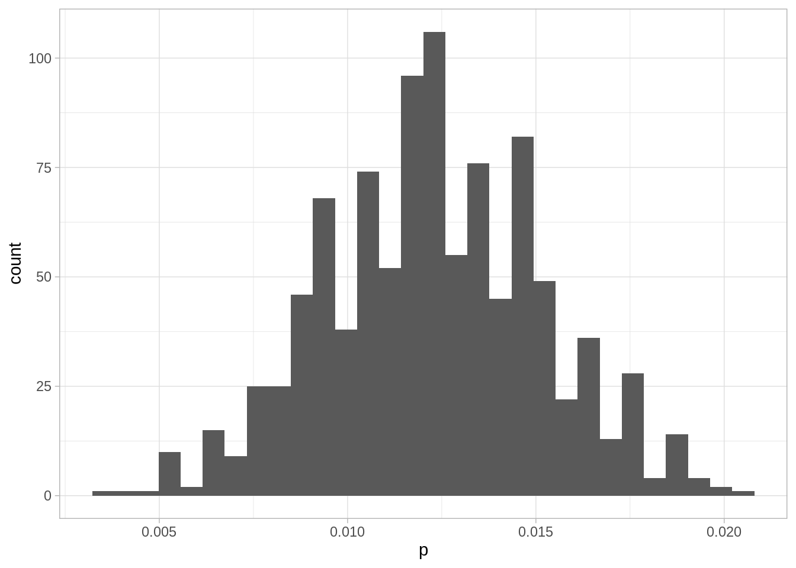

Uno de los procedimientos más estándar para estimar cantidades desconocidas es el método de máxima verosimilitud. Los estimadores de máxima verosimilitud tienen propiedades convenientes, y dan resultados buenos si los modelos probabilísticos
Máxima verosimilitud es un proceso intuitivo, y consiste en aprender o estimar valores de parámetros desconocidos suponiendo para los datos su explicación más probable. Para esto, usando supuestos y modelos requeriremos calcular la probabilidad de un conjunto de observaciones.
Ejemplo 1
Supongamos que una máquina produce dos tipos de bolsas de 25 galletas: la mitad de las veces produce una bolsa con 5 galletas de avena y 20 de chispas de chocolate, y la otra mitad produce galletas con 23 galletas de avena y 2 de chispas de chocolate.
Tomamos una bolsa, y no sabemos qué tipo de bolsa es (parámetro desconocido). Extraemos al azar una de las galletas, y es de chispas de chocolate (observación).
Por máxima verosimilitud, inferimos que la bolsa que estamos considerando tiene 5 galletas de avena. Esto es porque es más probable observar una galleta de chispas en las bolsas que contienen 5 galletas de avena que en las bolsas que contienen 23 galletas de avena.
14.1 El proceso de máxima verosimilitud
Cómo se aprecia en el ejemplo anterior, el esquema general es:
Existe un proceso del que podemos obtener observaciones de algún sistema o población real.
Tenemos un modelo probabilístico que dice cómo se producen esas observaciones condicionado al valor de ciertos parámetros desconocidos en nuestros modelos (\(\theta\)).
Extraemos observaciones del proceso:
\[x_1, x_2, \ldots, x_n\]
Queremos aprender de los parámetros desconocidos del proceso para calcular cantidades de interés acerca del sistema o población real. La inferencia se basa en la verosimilitud, o probabilidad condicional de observar \(x_1,x_2,\ldots, x_n\) dado distintos posibles valores de los parámetros \(\theta\) de interés:
\[P(x_1,x_2,\ldots, x_n|\theta)\]
En principio, los modelos que consideramos pueden ser complicados y tener varias partes o parámetros. Veamos primero un ejemplo clásico con un solo parámetro, y cómo lo resolveríamos usando máxima verosimilitud.
Nota: Cuando decimos muestra en general nos referimos a observaciones independientes obtenidas del mismo proceso (ver la sección anterior para ver qué significa que sea independientes). Este esquema es un supuesto que simplifica mucho los cálculos, como discutimos antes. Muchas veces este supuesto sale del diseño de la muestra o del estudio, pero en todo caso es importante considerar si es razonable o no para nuestro problema particular.
Ejemplo (proporción)
Supongamos que queremos saber qué proporción de registros de una base de datos tiene algún error menor de captura. No podemos revisar todos los registros, así que tomamos una muestra de 8 registros, escogiendo uno por uno al azar de manera independiente. Revisamos los 8 registros, y obtenemos los siguientes datos:
donde 1 indica un error menor. Encontramos dos errores menores. ¿Cómo estimamos el número de registros con errores leves en la base de datos?
Ya sabemos una respuesta razonable para nuestro estimador puntual, que sería \(\hat{p}=2/8=0.25\). Veamos cómo se obtendría por máxima verosimilitud.
Según el proceso con el que se construyó la muestra, debemos dar una probabilidad de observar los 2 errores en 8 registros. Supongamos que en realidad existe una proporción \(p\) de que un registro tenga un error. Entonces calculamos
pues la probabilidad de que cada observación sea 0 o 1 no depende de las observaciones restantes (la muestra se extrajo de manera independiente).
Esta ultima cantidad tiene un parámetro que no conocemos: la proporcion \(p\) de registros con errores. Así que lo denotamos como una cantidad desconocida \(p\). Nótese entonces que \(P(X_2=1) = p\), \(P(X_3=0) = 1-p\) y así sucesivamente, así que la cantidad de arriba es igual a
\[p(1-p)p(1-p)(1-p)p(1-p)(1-p)(1-p) \]
que se simplifica a
\[ L(p) = p^2(1-p)^6\]
Ahora la idea es encontrar la p que maximiza la probabilidad de lo que observamos. En este caso se puede hacer con cálculo, pero vamos a ver una gráfica de esta función y cómo resolverla de manera numérica.
La forma de esta función (verosimilitud) depende de los datos
Cuando cambiamos la \(p\), la probabilidad de observar la muestra cambia. Nos interesa ver las regiones donde la probabilidad es relativamente alta.
El máximo está en 0.25.
Así que el estimador de máxima verosimilitud es \(\hat{p} = 0.25\)
Obsérvese que para hacer esto usamos dos partes del proceso generador de datos:
Un modelo teórico con parámetros de cómo son las observaciones
Información de como se extrajo la muestra,
y resolvimos el problema de estimación convirtiéndolo en uno de optimización.
Para confirmar nuestro resultado, escribimos la función de verosimilitud
Código
crear_verosim <-function(datos_error){ verosim <-function(p){ n <-length(datos_error) err <-sum(datos_error)# nota: es mejor usar el logaritmo de la verosimilitud res <- (p^err) * ((1- p)^(n - err)) res } verosim}datos_error <-c(0, 1, 0, 0, 1, 0, 0 ,0)verosim <-crear_verosim(datos_error)verosim(0.50)
[1] 0.00390625
Código
verosim(0.25)
[1] 0.01112366
Y ahora maximizamos:
Código
estimador_mv <-function(datos){ verosim <-crear_verosim(datos) res <-optimize(verosim, interval =c(0.0001, 0.9999), maximum =TRUE) res$maximum}est_mv <-estimador_mv(datos_error)est_mv
[1] 0.2499972
Y obtenemos el resultado esperado. En este ejemplo particular, no es necesario optimizar, puede obtenerse analíticamente el valor del estimador.
Aspectos numéricos
Cuando calculamos la verosimilitud arriba, nótese que estamos multiplicando números que pueden ser muy chicos (por ejemplo \(p^6\), etc). Esto puede producir desbordes numéricos fácilmente. Por ejemplo para un tamaño de muestra de 1000, podríamos tener que calcular
Código
p <-0.1proba <- (p ^800)*(1-p)^200proba
[1] 0
En estos casos, es mejor hacer los cálculos en la escala logarítmica. El logaritmo convierte productos en sumas, y baja exponentes multiplicando. Si calculamos en escala logaritmica la cantidad de arriba, no tenemos problema:
Código
log_proba <-800*log(p) +200*log(1-p)log_proba
[1] -1863.14
Ahora notemos que
Maximizar la verosimilitud es lo mismo que maximizar la log-verosimilitud, pues el logaritmo es una función creciente. Si \(x_{max}\) es el máximo de \(f\), tenemos que \(f(x_{max})>f(x)\) para cualquier \(x\), entonces tomando logaritmo,
\[log(f(x_{max}))>log(f(x))\] para cualquier \(x\), pues el logaritmo respeta la desigualdad por ser creciente.
Usualmente usamos la log verosimilitud para encontrar estimador de máxima verosimilitud
Hay razónes teóricas y de interpretación por las que también es conveniente hacer esto.
14.2 Ejemplo 2
En 2020 se hizo un estudio de seroprevalencia de COVID en Santa Clara, California.
Se tomó una muestra de individuos (ver los detalles en el artículo original). Para propósitos de este análisis supondremos que la muestra puede considerarse como aleatoria simple.
Se obtuvieron 3,300 individuos, y 50 de ellos resultaron con prueba positiva (1.5%). Sin embargo, el kit de prueba que estaban utilizando tenía una especificidad de 99.5% (probabilidad de dar negativo para una persona que no está infectada) y una sensibilidad de 83%. Estas cantidades también fueron con estimadas con muestras gold standard no muy grandes, y reportan un intervalo de 99.2% a 99.7% para la primera cantidad y de 76% a 88.4% para la segunda. Por el momento usaremos las estimaciones puntuales.
Construiremos una estimación de máxima verosimilitud para el % de personas \(\theta\) que ha tenido COVID en Santa Clara al momento del estudio.
El parámetro de interés principal \(p\), la proporción de personas seroprevalentes.
La probabilidad de observar un resultado positivo es, por probabilidad total:
\[ p\theta_{pos} + (1-p)(1-\theta_{neg}),\]
es decir, podemos observar un verdadero positivo o un falso positivo. Escribimos la función de (log) verosimilitud:
Como vemos, el resultado tiene un ajuste con respecto a la muestra debido a las características del kit de prueba (especialmente por los falsos positivos).
14.3 Bootstrap paramétrico
Las estimaciones de arriba son puntuales, y generalmente requerimos medidas de incertidumbre. Podemos usar una variación del bootstrap que supone que simula de nuestro modelo de probabilidad para entender cuánto puede variar nuestra estimación
Bootstrap paramétrico
Una vez que observamos una muestra, estimamos los parámetros de interés por máxima verosimilitud.
Simulamos una nueva muestra del mismo tamaño con nuestro modelo de probabilidad ajustado. Estimamos nuevamente el parámetro con máxima verosimilitud.
Repetimos el paso anterior una gran cantidad de veces para estimar la distribución de muestreo.
Construimos intervalos de percentiles con las simulaciones de 1-3.
Ejemplo
Consideramos el ejemplo del estudio de Santa Clara. Ya tenemos el código para encontrar el estimador de máxima verosimilitud. Pero necesitaremos simular datos de nuestro modelo de probabilidad cuando conocemos el parámetro \(\theta\) (la tasa de seroprevalencia). En este caso, la función de simulación es simple:
`stat_bin()` using `bins = 30`. Pick better value with `binwidth`.

Código
quantile(sims_boot$p, c(0.05, 0.95)) |>round(3)
5% 95%
0.008 0.017
Y este sería nuestro intervalo de confianza para la prevalencia bajo los supuestos que hicimos. Sin embargo, también tenemos que considerar la incertidumbre en las cantidades de sensibilidad y especificidad como veremos a continuación.
Incertidumbre en el desempeño del kit
Podemos probar qué pasaria si la especificidad estuviera de lado bajo según los intervalos reportados:
que es considerablemente más bajo que el número anterior. Nótese que parece ser que este análisis es muy dependiente de la verdadera especificidad. Por ejemplo, si hacemos la especificidad 98%, obtenemos que el estimador de máxima verosimilitud es casi cero, es decir: lo más probable es que estemos observando solamente falsos positivos.
Código
100*estimador_mv(3300, 50, 0.83, 0.98)
[1] 0.001
Veremos cómo tratar esto de otra manera en la sección de inferencia bayesiana. Sin embargo, consideremos que pasa con nuestra estimación si la especificidad está del lado bajo:
Y el resultado que obtuvimos es consistente con una seroprevalencia de hasta 0.2%. Claramente, las conclusiones acerca del subreporte de resultados y de el riesgo de COVID cambia mucho del análisis anterior a este que considera el extremo inferior de especificidad del kit de prueba.